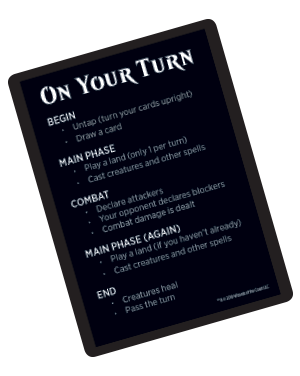

Magic the Gathering - Podręcznik podstaw gry¶
Gra w Magic¶
Jeśli po raz pierwszy spotykasz się z grą Magic, ten dział wprowadzi cię w grę i będzie podręczną pomocą w razie wątpliwości.
Podstawowe tematy
Zaawansowane tematy
Jak czytać kartę do gry w Magic¶
Karty w Magicu są tak zaprojektowane, że potrzebne informacje są zawsze w tym samym miejscu.

Nazwa¶
Każda karta posiada nazwę, która służy za jej unikalny identyfikator. Dana karta mogła być przedrukowana w różnych dodatkach do gry, jednak nigdy nie będzie różnicy w działaniu kart mających tę samą nazwę. W większości formatów rozgrywki możesz mieć co najwyżej cztery kopie karty o tej samej nazwie w talii (wyjątkiem są bazowe lądy, na które nie ma ograniczenia). Jeśli nazwa karty pojawia się w jej polu tekstu, to karta odnosi się sama do siebie, a nie innej karty o tej samej nazwie. [przyp. tłumacza:] Zasada ta jest konieczna w języku angielskim, gdyż mało jest tam zaimków wskazujących - funkcjonują w zasadzie tylko „this” i „that”. Podczas tłumaczenia - na razie eksperymentalnie - zmieniłem tę zasadę i karta odwołuje się do siebie w sposób „ta karta”, „ten czar” albo „ten byt”. W szczególnie zawiłych sytuacjach użyte jest słowo „niniejszy”, które jest dobitnym wskazaniem że karta odwołuje się sama do siebie.
Koszt many¶
Mana jest zasobem używanym do rzucania czarów. Wszystkie karty czarów mają koszt many w prawym górnym roku. Koszt 
 karty Serra Angel oznacza, że musisz zapłacić trzy many dowolnego koloru plus dwie białe many, aby ją rzucić.
karty Serra Angel oznacza, że musisz zapłacić trzy many dowolnego koloru plus dwie białe many, aby ją rzucić.
Linia typu¶
Każda karta w Magic posiada typ, a niektóre karty posiadają także podtyp, który dostarcza dodatkowych informacji. Przykładowo Serra Angel jest typu stwór (creature), a jej podtypem jest Anioł (Angel).
, Wyspy (Island) dają niebieską  , Bagna (Swamp) dają czarną
, Bagna (Swamp) dają czarną  , Góry (Mountain) dają czerwoną
, Góry (Mountain) dają czerwoną  , a Lasy (Forest) dają zieloną
, a Lasy (Forest) dają zieloną  .
.Możesz zagrywać jeden ląd w każdej z twoich tury. Aby zagrać ląd, umieść go na polu bitwy z twojej ręki podczas jednej z faz głównych w twojej turze.
 w koszcie) dopóki nie zaczną twojej tury pod twoim władaniem. Możesz blokować stworem niezależnie od kiedy przebywa on na polu bitwy.
w koszcie) dopóki nie zaczną twojej tury pod twoim władaniem. Możesz blokować stworem niezależnie od kiedy przebywa on na polu bitwy.Pole tekstu¶
Niektóre karty mają specjalne zdolności, które wypisane są tutaj (w polu powyżej linii). Czasami zdolności mają w nawiasie tekst przypominający ich działanie. Na karcie może się pojawić także „tekst klimatyczny”, poniżej linii. Ów tekst nie ma żadnego wpływu na rozgrywkę, ale pozwala lepiej wczuć się w klimat karty i samej gry.
Zdolności stworów i innych bytów na polu bitwy zwykle należą do jednej z trzech kategorii: zdolności statycznych, zdolności wyzwalanych oraz zdolności aktywowanych.
: Stwórz żeton bezkolorowego artefaktycznego stwora Kopter 1/1 z lataniem.” Niektóre aktywowane zdolności zawierają w swoim koszcie symbol (przekręcenie); oznacza to, że musisz przekręcić ową kartę, by aktywować jej zdolność. Nie możesz aktywować tego typu zdolności jeśli byt jest już przekręcony albo jeśli stwór ma chorobę przywołania.Siła/Wytrzymałość¶
Każda karta stwora posiada ramkę prawym dolnym rogu, która pokazuje jego siłę i wytrzymałość. Siła stwora (pierwsza liczba) jest liczbą obrażeń zadawanych w potyczce. Wytrzymałość (druga liczba) jest liczbą obrażeń, które muszą być mu zadane w ciągu jednej tury, żeby go zniszczyć.

Symbol edycji/dodatku¶
Jest to symbol edycji lub dodatku, z którego pochodzi dana karta. Każdy zestaw kart do Magica posiada swój charakterystyczny symbol, a kolor owego symbolu mówi o rzadkości karty.


Pole gry¶

Partia gry w Magic zaczyna się od talii graczy i ich znaczników życia leżących na stole, jednakże gdy każdy z graczy miał kilka tur na zagranie lądów, rzucenie czarów i atakowanie stworami, zaczyna się tworzyć coś na kształt planszy gry. Obszar ten jest podzielony na kilka różnych stref gry. Powyższy obrazek pokazuje jak może wyglądać dwuosobowa gra po przebiegu kilku tur.
Biblioteka¶
Twoja biblioteka to twój stos dobierania, który pozostaje zakryty przez całą grę. Przegrywasz grę jeśli musisz dobrać kartę, ale nie możesz, bo skończyły ci się karty w bibliotece.
Ręka¶
Zaczynasz grę dobierając siedem kart. Jeśli masz więcej niż siedem kart w ręce na koniec swojej tury, musisz odrzucić nadmiar.
Pole bitwy¶
Ty i twoi przeciwnicy współdzielicie pole bitwy. Karty trafiające na nie (między innymi lądy, stwory, artefakty i uroki) nazywa się bytami. Sztuczki i obrzędy nigdy nie trafiają na pole bitwy. Możesz rozmieszczać twoje byty jak tylko chcesz (zalecamy umieszczać lądy bliżej ciebie), ale twój przeciwnik musi mieć możliwość zobaczenia ich wszystkich.
Cmentarz¶
Cmentarz jest stosem kart odrzuconych; trafiają tu umarłe stwory, zniszczone artefakty lub uroki, a także karty odrzucone z ręki. Karty w twoim cmentarzu powinny być zawsze odsłonięte i każdy może je przeglądać w dowolnej chwili. Każdy gracz ma swój własny cmentarz.
Wygnanie¶
Jeśli czar lub zdolność wygania kartę, owa karta jest odkładana osobno od reszty gry. Karty na wygnaniu są zwykle odsłonięte.
Akcje w grze¶
Ta sekcja opisuje akcje, które można wykonać podczas gry - przekręcanie kart, rzucanie czarów oraz atakowanie i blokowanie stworami w potyczce.
Przekręcanie i odkręcanie¶
Aby przekręcić (zaznaczyć) kartę należy obrócić ją prostopadle, by zaznaczyć, że ta karta już została użyta w danej turze. Robisz to używając lądów do uzyskania many, czy atakując stworem albo używając zdolności posiadającej symbol w jej koszcie ( oznacza „przekręć ten byt”). Kiedy byt jest przekręcony, nie możesz go przekręcić ponownie dopóki nie zostanie odkręcony (ponownie odwrócony pionowo). Z początkiem twojej tury odkręcasz swoje przekręcone karty, by móc ich użyć ponownie.
Rzucanie czarów¶
Aby rzucić czar, musisz opłacić jego koszt many (umieszczony w prawym górnym rogu karty) poprzez przekręcenie lądów (lub innych bytów), by wytworzyć liczbę i rodzaj many wymaganą przez ów czar. Przykładowo: jeśli chcesz rzucić Serra Angel kosztujący możesz przekręcić trzy bazowe lądy dowolnego typu, by zapłacić za oraz dwie Równiny (Plains), by zapłacić za .
Gdy czar został już rzucony może się zdarzyć jedna z dwóch rzeczy. Jeśli czar jest sztuczką lub obrzędem, podążasz za instrukcjami na karcie, a po czym umieszczasz owa kartę w twoim cmentarzu. Jeśli czar jest stworem, artefaktem lub urokiem, umieszczasz kartę na stole przed sobą. Owa karta jest teraz na polu bitwy.
Karty na polu bitwy nazywane są bytami, by odróżnić je od sztuczek i obrzędów, które nigdy nie znajdują się na polu bitwy.

Atakowanie i blokowanie¶
Najpowszechniejszym sposobem wygrania gry jest atakowanie swoimi stworami. Jeśli stwór atakujący przeciwnika nie zostanie zablokowany, zadaje mu obrażenia równe swojej sile.
Środkowa faza każdej tury to faza potyczki. W twojej fazie potyczki wybierasz, które z twoich stworów będą atakować i których graczy. Przekręć twoje stwory, by pokazać, że atakują. Twoi przeciwnicy mogą po czym wybrać, które z ich stworów będą blokować, o ile w ogóle. Przekręcone stwory nie mogą być wyznaczone do bloku.
Gdy już blokujący zostali wybrani, każdy stwór — zarówno atakujący jak i blokujący — jednocześnie zadaje obrażenia równe swojej sile (liczba po lewej stronie ukośnika w prawym dolnym rogu karty).
Atakujący stwór, który nie został zablokowany, zadaje obrażenia zaatakowanemu graczowi.
Atakujący stwór, który został zablokowany, zadaje obrażenia blokującemu stworowi i vice versa.
Jeśli obrażenia są zadawane przeciwnikowi, traci on tyle samo życia.
Jeśli jeden z twoich atakujących stworów jest blokowany przez kilka stworów, to ty decydujesz, jak są rozdzielane między nimi obrażenia bojowe. Musisz przypisać co najmniej tyle obrażeń pierwszemu, żeby został zniszczony, zanim będzie można przypisać obrażenia kolejnemu, i tak dalej.
Jeśli stwór w ciągu trwania jednej tury otrzyma obrażenia równe lub większe jego wytrzymałości (obojętnie, czy będą to obrażenia bojowe, od czarów lub zdolności, czy też dowolna ich kombinacja), ów stwór zostaje zniszczony i trafia do cmentarza swojego władcy (mówimy, że „umiera”). Jeśli stwór nie otrzyma w ciągu jednej tury dość obrażeń, by został zniszczony, ów stwór pozostaje na polu bitwy, a obrażenia znikają na koniec tury.
W kolejnych przykładach przeciwnik atakuje cię różnymi stworami:¶

Mesa Unicorn zadaje ci 2 obrażenia.¶

Mesa Unicorn zostaje zniszczony.¶

Oba stwory przeżywają.¶
Giant Spider zostaje zniszczony.¶
W kolejnym przykładzie Dwarven Priest atakuje, a ty masz dwa stwory, które mogą blokować. Kiedy blokujesz co najmniej dwoma stworami, twój przeciwnik musi wybrać kolejność, według której twoi blokujący otrzymają obrażenia. Pamiętaj, że atakujący gracz zawsze wybiera kolejność, w której blokujące stwory otrzymają obrażenia.
Recalamation Sage oraz Giant Spider zadadzą łącznie 4 obrażenia Dwarven Priest, co wystarczy, by został zniszczony. Jednocześnie Dwarven Priest zada dość obrażeń, by zniszczyć Reclamation Sage, ale nie dość, by zniszczyć Giant Spider. Ponieważ w każdym przypadku Dwarven Priest przeciwnika zostanie zniszczony, decyduje on, żeby Reclamation Sage był przed Giant Spider, żeby przynajmniej jeden z twoich stworów został zniszczony.

Gdy już blokujący zostali przyporządkowani, zadawane są obrażenia. Dwarven Priest zadaje 1 obrażenie Reclamation Sage niszcząc go, a pozostałe 1 obrażenie zadaje stworowi Giant Spider.
Zaawansowane tematy¶
Jednym z najciekawszych aspektów grania w Magic jest przeogromna liczba różnych kart, którymi można grać, co powoduje, że w trakcie gry może się wydarzyć sporo przeróżnych sytuacji. Ta sekcja pozwoli ci wejść nieco głębiej w zasady Magica.
Wskazywanie celu¶
Niektóre czary i zdolności używają słowa „wskaż (cel)” (target), by opisać, na co czar lub zdolność będą działać. Musisz wskazać wszystkie cele czaru podczas rzucania go, a w przypadku zdolności, gdy jest ona wyzwalana lub gdy ją aktywujesz. Jeśli warunki wskazywania nie mogą zostać spełnione, nie możesz rzucić czaru lub aktywować zdolności. Przykładowo: jeśli czar ma tekst „Zniszcz wskazanego stwora”, ale nie ma żadnych stworów na polu bitwy, to nie możesz rzucić tego czaru, bo nie można wskazać dla niego celu.
Jeśli czar „zadaje obrażenia w dowolnie wskazany cel”, możesz wskazać dowolnego stwora lub gracza (lub wędrowca, jeśli któryś gracz go ma) jako cel owego czaru.
Gdy już wskażesz cele, nie możesz zmienić zdania. Podczas rozpatrywania czaru cele są sprawdzane, by się upewnić, że są legalne (czyli że nadal tam są i nadal spełniają wymagania czaru lub zdolności). Jeśli jakiś cel przestał być legalny, czar lub zdolność przestają go dotyczyć. Jeśli wszystkie cele przestały być legalne, czar lub zdolność w ogóle niczego nie robią (mówi się, że został rozporoszony lub „sfizlował”).
Stos¶
Stos jest strefą gry współdzieloną przez wszystkich graczy (podobnie jak pola bitwy), gdzie czary i zdolności czekają na rozpatrzenie. Rozpatrzenie czaru lub zdolności oznacza po prostu, że ich efekt się wydarza.
Kiedy skończysz umieszczać czary i zdolności na stosie, priorytet jest przekazywany kolejnemu graczowi, który może chcieć użyć swojego czaru lub zdolności w odpowiedzi. Kolejni gracze (włączając ciebie) mogą po czym odpowiadać na odpowiedź owego gracza i tak dalej — w rezultacie tworzy się „stos” czekający na rozpatrzenie. Czary i zdolności pozostają na stosie dopóki wszyscy gracze nie zdecydują, że nie chcą już rzucać kolejnych czarów lub aktywować nowych zdolności.
Ogólną zasadą jest, że czary i zdolności na stosie są rozpatrywane pojedynczo, zaczynając od tego, który został położony na stosie jako ostatni.
Każdy gracz ma możliwość rzucenia czaru sztuczki (lub aktywowania zdolności) w odpowiedzi na jakikolwiek czar lub zdolność, które trafią na stos. Jeśli gracz zdecyduje się odpowiedzieć, jego czar lub zdolność trafiają na stos na wierzch tego, co już tam jest. Kiedy wszyscy gracze spasują — tzn. zdecydują, że nic więcej nie chcą robić — wtedy znajdujący się na wierzchu czar lub zdolność zostanie rozpatrzony.
Po rozpatrzeniu czaru lub zdolności gracze ponownie mają szansę zagrania odpowiedzi. Jeśli żaden tego nie zrobi, rozpatrzona zostanie kolejna pozycja ze stosu. Jeśli stos jest pusty, zakończy się aktualny krok, a gra przejdzie do kolejnego kroku.
Titanic Growth zostaje rozpatrzony sprawiając, że Eager Construct jest 6/6 do końca tury. Następnie Shock zostaje rozpatrzony zadając 2 obrażenia podpompowanemu Eager Constructowi, co nie wystarcza, by go zniszczyć.

Części tury¶
Każda tura postępuje według tego samego schematu. Ilekroć wejdziesz w nowy krok lub fazę zostaną wyzwolone (i umieszczone na stosie) wszystkie zdolności reagujące na nastanie danej fazy lub kroku. Aktywny gracz (czyli ten, którego tura obecnie trwa) może zacząć rzucać czary i aktywować zdolności, po czym wszyscy inni gracze kolejno mogą to robić. Kiedy wszyscy gracze spasują i nic na stosie nie czeka na rozpatrzenie, gra przejdzie do kolejnego kroku.
Faza początkowa¶
Krok odkręcania Odkręcasz wszystkie twoje przekręcone byty. W pierwszej turze gry nie masz żadnych bytów, więc po prostu pomijasz ten krok. Nikt nie może rzucać czarów ani aktywować zdolności podczas tego kroku.
Krok utrzymania Gracze mogą rzucać czary i aktywować zdolności. Ta część tury jest wymieniona na niektórych kartach. Jeśli coś ma się wydarzyć raz na turę, zaraz na jej początku, zdolność będzie wyzwalana „na początku twojego kroku utrzymania.”
Krok dobierania Musisz dobrać kartę z twojej biblioteki (nawet jeśli nie chcesz). Gracz, który rozpoczyna grę dwuosobową pomija ten krok w swojej turze, by wyrównać korzyść wynikającą z rozpoczęcia gry. Gracze po czym mogą rzucać sztuczki i aktywować zdolności.
Pierwsza faza główna¶
Możesz rzucić dowolną liczbę obrzędów, sztuczek, stworów, artefaktów, uroków i wędrowców oraz możesz aktywować zdolności. Możesz zagrać ląd w tej fazie, ale pamiętaj, że możesz zagrać tylko jeden ląd w trakcie swojej tury. Twój przeciwnik może rzucać sztuczki i aktywować zdolności.
Faza potyczki¶
Krok początku potyczki Gracze mogą rzucać sztuczki i aktywować zdolności.
Krok deklaracji atakujących Decydujesz które, o ile jakiekolwiek, z twoich odkręconych stworów będzie atakować oraz którego gracza lub wędrowca będą atakować. To przekręci atakujące stwory. Gracze mogą po czym rzucać sztuczki i aktywować zdolności.
Krok deklaracji blokujących Twój przeciwnik decyduje które, o ile jakiekolwiek, z jego odkręconych stworów będzie blokować twoje atakujące stwory. Jeśli wiele stworów blokuje pojedynczego atakującego, to ty decydujesz o kolejności otrzymywania przez nich obrażeń. Gracze po czym mogą rzucać sztuczki i aktywować zdolności.
Krok obrażeń bojowych Każdy atakujący i blokujący stwór, który nadal jest na polu bitwy przypisuje obrażenia zaatakowanemu graczowi (jeśli go atakuje i nie był zablokowany), wędrowcowi (jeśli go atakuje i nie został zablokowany), oraz stworom blokującym go lub zablokowanym przez niego. Jeśli atakujący stwór jest blokowany przez kilka stworów, obrażenia rozdzielasz między owe stwory przypisując pierwszemu co najmniej tyle, by go zniszczyć, zanim przypiszesz kolejnemu itd. Gdy już gracze określili, jak będą zadane obrażenia, są one zadawane w tym samym momencie. Gracze mogą po czym rzucać sztuczki i aktywować zdolności.
Krok końca potyczki Gracze mogą rzucać sztuczki i aktywować zdolności.
Druga faza główna¶
Twoja druga faza główna jest zupełnie jak pierwsza — możesz rzucać dowolne rodzaje czarów i aktywować zdolności, ale twoi przeciwnicy mogą rzucać jedynie sztuczki oraz aktywować zdolności. Możesz zagrać ląd w tej fazie jeśli nie zrobiłeś tego w pierwszej fazie głównej.
Faza końcowa¶
Krok końcowy Zdolności wyzwalane „na początku twojego kroku końcowego” trafiają na stos. Gracze mogą rzucać sztuczki i aktywować zdolności.
Krok sprzątania Jeśli masz więcej niż siedem kart w ręce, wybierz i odrzuć tyle kart, żeby mieć znów tylko siedem. Następnie usuwane są obrażenia ze stworów i kończą się efekty trwające „do końca tury”. Nikt nie może rzucać sztuczek ani aktywować zdolności dopóki jakaś zdolność nie zostanie wyzwolona w tym kroku.